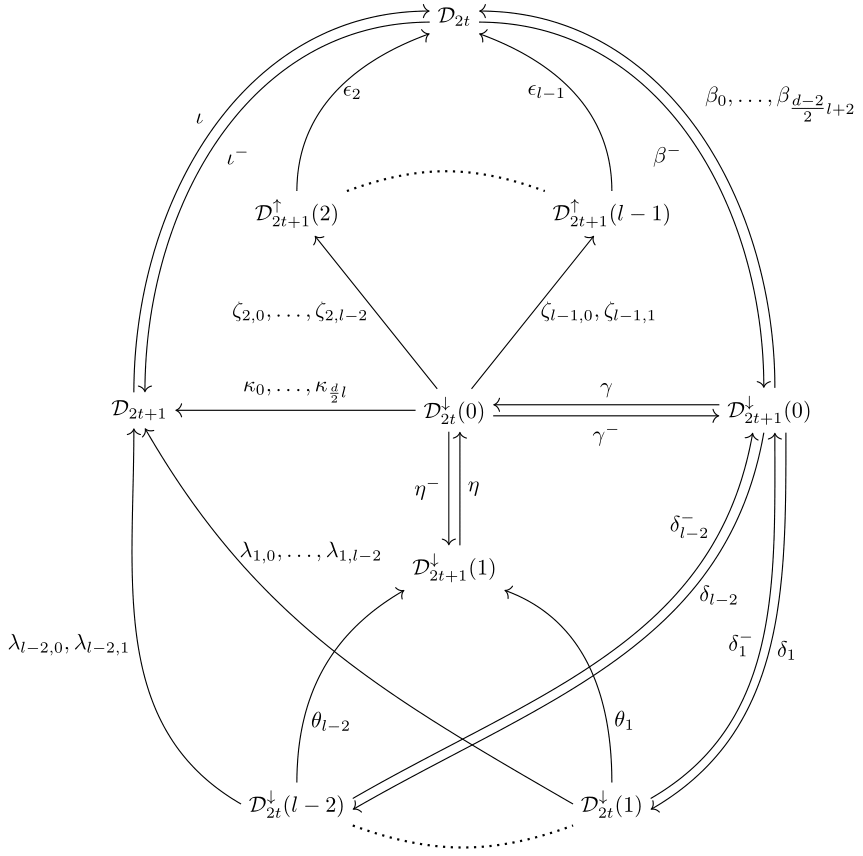
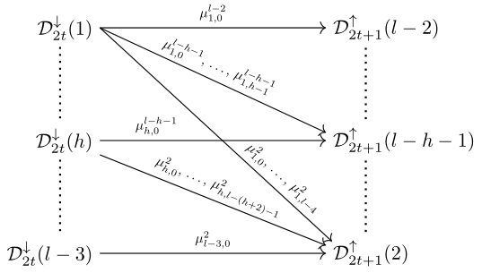
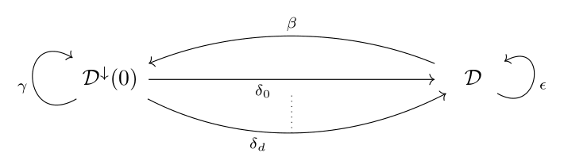

\(d\)-torsion classes
This is a supplement to the paper \(\tau_d\)-tilting theory for Nakayama algebras [RV24].
Preliminary
We are working with linear Nakayama algebras with homogeneous relations, admitting a \(d\)-cluster tilting subcategory \(\mathcal{C}\). Specifically, for an algebraically closed field \(\mathbf{k}\), we are working with the algebras \(\Lambda(n,l)=\mathbf{k}\mathbb{A}_n/R^l\), where \(R\) is the arrow ideal of the quiver \(\mathbb{A}_n\) given by $$ n\longrightarrow n-1 \longrightarrow \cdots \longrightarrow 2 \longrightarrow 1 .$$ The indecomposable modules of \(\operatorname{mod}\Lambda\) are uniquely given through their support on \(\mathbb{A}_n\), which can be described as subintervals of \([1,n]\). Hence, they will be denoted by \(M(a,b)\), where \([a,b]\) is their support-interval.
For some more preliminary information on the \(d\)-cluster tilting subcategory of \(\Lambda(n,l)\) and the possibility of constructing your own \(\tau_d\)-rigid pair, visit here.
\(d\)-torsion classes
Higher torsion classes where introduced in [Jør16] and they were further studied in [AJST22] and [AHJ+24]. They are certain subcategories of \(d\)-cluster tilting subcategories defined in such a way that the case \(d=1\) recovers the classical notion of torsion classes.
The paper [RV24] gives a combinatorial classification of \(d\)-torsion classes for algebras of the form \(\Lambda(n,l)\). Our description is given via a bijection to directed paths in a graph called \(G(\mathcal{C})\). In general, the graph \(G(\mathcal{C})\) has the following form:
Consider a directed path of length \(p-1\) in this graph, which also starts at a vertex with subscript \(2t+1\). For each of the nodes traversed by such a path, we can assign a collection of modules in the "diagonals" of the \(d\)-cluster tilting subcategory in a certain way. Similarly, for each arrow we can define a certain collection of projective-injective modules lying between those diagonals. It turns out that such an assignment defines a \(d\)-torsion class in a unique way and that all \(d\)-torsion classes can be obtained by this procedure. For details on how the aforementioned assignments are made we refer to [RV24], but keep reading for an interactive way to compute \(d\)-torsion classes using paths.
Alas, life would be too easy if this was the complete picture. Indeed, in the case where \(d=2\), we have to include these additional arrows to \(G(\mathcal{C})\):
On the other hand, if you are lucky enough to care only for the case \(l=2\), then the whole graph \(G(\mathcal{C})\) simplifies to the following:
Finding \(d\)-torsion classes
Below you can generate an algebra \(\Lambda(n,l)\) which admits a \(d\)-cluster tilting subcategory, by choosing \(d\), \(p\) and \(l\) appropriately. The module category will be represented by its AR-quiver where each vertex is an indecomposable. The darker vertices are indecomposables in the \(d\)-cluster tilting subcategory. Notice how they form some nice consecutive diagonals.
After you choose your parameters \(d\), \(p\) and \(l\), you can construct a path in the graph \(G(\mathcal{C})\). To do that you can select the arrows one after another from the boxes below. Choosing an arrow restricts the choices for the next arrow so that you always construct a well-defined directed path in the graph \(G(\mathcal{C})\). After you have chosen all arrows, you can press the "Create a \(d\)-torsion class" button which will define the \(d\)-torsion class for you.
How does the bijection work?
Here are a few more details on how the generation of \(d\)-torsion classes from paths in \(G(\mathcal{C})\) works.
The nodes of the graph are named in a relatively intuitive way. As mentioned, they correspond to the modules in the diagonals. The index \(2t+1\) refers to the odd-numbered diagonals and the index \(2t\) refers to the even-numbered diagonals. Notice that depending on the parity, the diagonals have a different orientation. The \(\uparrow\) symbol on a node indicates that we start at a module in a diagonal and include all of the modules in the diagonal above it. The module we start at is the one with length equal to the number appearing in that node. Dually for the \(\downarrow\) symbol. A node with no number indicates taking all modules in a diagonal and a \(0\) indicates taking none. You will probably grasp the patterns after playing with them for a while.
The arrows on the other hand are named alphabetically so the letter in their name does not give much information about them (but the numbers in their name do give information). The arrows correspond to the projective-injective modules between the diagonals corresponding to their start and end node. When including such a projective-injective module in the \(d\)-torsion class, it turns out that all successive projective-modules must also be included (until the next diagonal is reached). Hence the indices contain the information of how many projective-injective modules are included between the two diagonals. Note that not all possibilities are necessarily available, depending on the nature of the preceeding and upcoming diagonals. Sometimes there are more indices on the arrows which contain information about their start and end node, but these are there only so that arrows can be easily distinguished. Playing a bit more with the interactive tool above should give sufficient intuition of how to compute the modules between diagonals, but for precise definitions we refer to the article [RV24].
References
- Jenny August, Johanne Haugland, Karin M Jacobsen, Sondre Kvamme, Yann Palu, and Hipolito Treffinger. A characterisation of higher torsion classes, Forum of Mathematics, Sigma 13 (2024), e33, 10.1017/fms.2024.73, MR4860676.
- Jenny August, Johanne Haugland, Karin M Jacobsen, Sondre Kvamme, Yann Palu, and Hipolito Treffinger. Higher torsion classes, \(\tau_d\)-tilting theory, and silting complexes, In preparation (2025+).
- Javad Asadollahi, Peter Jørgensen, Sibylle Schroll, and Hipolito Treffinger. On higher torsion classes, Nagoya Math. J. 248 (2022), 823–848, 10.1017/nmj.2022.8, MR4508267.
- Peter Jørgensen. Torsion classes and t-structures in higher homological algebra, Int. Math. Res. Not. IMRN 13 (2016), 3880–3905, doi.org/10.1093/imrn/rnv265, MR3544623.
- Endre S. Rundsveen and Laertis Vaso. \(\tau_d\)-tilting theory for Nakayama algebras, arXiv preprint arXiv:2410.19505 (2024).